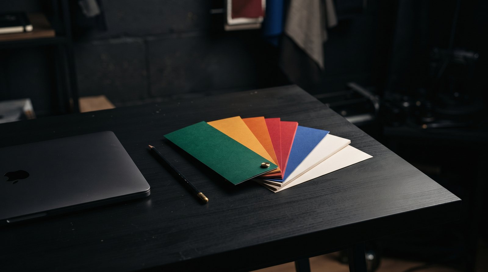
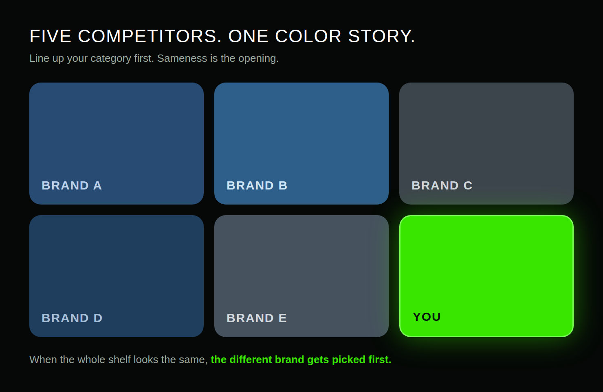
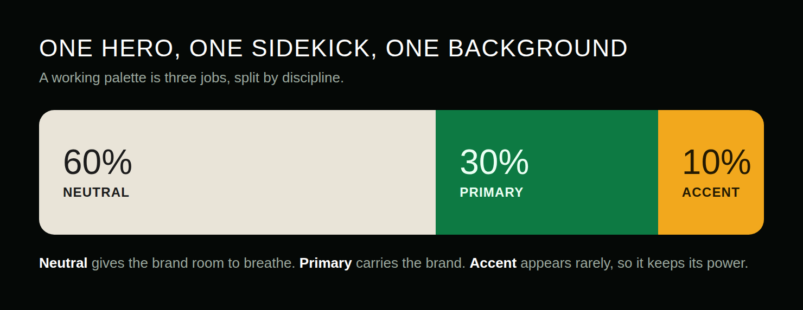

HOW TO PICK BRAND COLORS THAT ACTUALLY WORK.
Most brands pick their colors the way people pick paint for a living room: whatever feels nice that week. That is why so many brands end up forgettable, or worse, interchangeable with the competitor across the street. Color is not decoration. It is the first thing your audience processes, before the name, before the logo shape. Here is how to pick colors that earn their place.

Start from the feeling, not the color wheel
Every color has a job. Before you open any palette tool, write down the single word your brand needs to own. Calm. Bold. Premium. Playful. Trustworthy. One word, not five.
Your audience already speaks the language of color, even if they cannot name it. Banks reach for blue because blue reads as stable. Fast food reaches for red and yellow because those colors read as fast and hungry. Luxury reaches for black and gold because those read as rare and expensive. This is not a rulebook you must follow, but it is a language your audience already understands. Speak it on purpose.
If you cannot name the feeling, the color wheel cannot help you yet. The wheel is a tool for choosing, not for deciding.
Check your category before you commit
Line up your five closest competitors and look at their colors side by side. Nine times out of ten, you will see the same safe blue, the same friendly green, the same corporate gray. That sameness is your opening.
The goal is not to be different for the sake of it. The goal is to be the brand the eye lands on first. If your whole niche is blue, a deep warm red or a confident black does not just look different, it owns the shelf. Differentiation is a strategy, and color is the cheapest way to buy it.
One caution: run from the obvious. If the trendy color of the year fits your niche perfectly, ask yourself whether it will still fit in three years. A color you chose because everyone else chose it is a color you will be redesigning out of soon.

One hero, one sidekick, one background
A working palette is three jobs, not three favorite colors. One primary that carries the brand and does the heavy lifting. One secondary that supports it in layouts, buttons, and accents. One neutral, white, off white, or dark, that gives both room to breathe.
The classic split is roughly sixty percent neutral, thirty percent primary, ten percent accent. It works because it forces discipline. When the primary appears rarely, it keeps its power. When it appears everywhere, it becomes noise.

Start with these three. Add a fourth color only when a real layout demands it, never because the palette feels thin. Most brands that look messy are not missing a color. They are using too many.
Test it where it actually lives
A palette that looks perfect in a presentation deck can fall apart in the wild. Check your colors on a phone screen in daylight, printed on plain paper, and next to each other at tiny sizes. Screens lie. Paper tells the truth.
Then check accessibility, because a beautiful palette nobody can read is a broken palette. Body text needs strong contrast against its background. Free contrast checkers take thirty seconds and save you from a rebrand later.
Finally, run the hardest test I know: strip all the color away. Does the logo still read in pure black and white? If the shape survives, the color is decoration on top of good structure. If it dies, the design was leaning on color to do the thinking.
Pick the color that says what your brand does. Then use it like you mean it, everywhere, without apology.